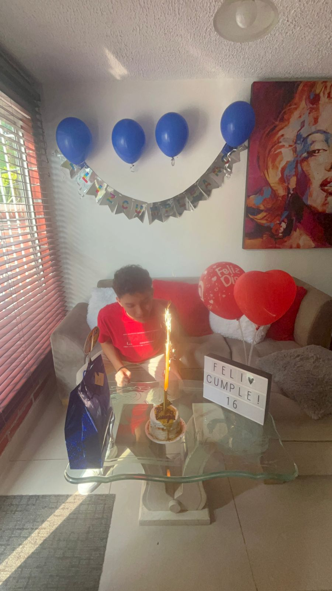
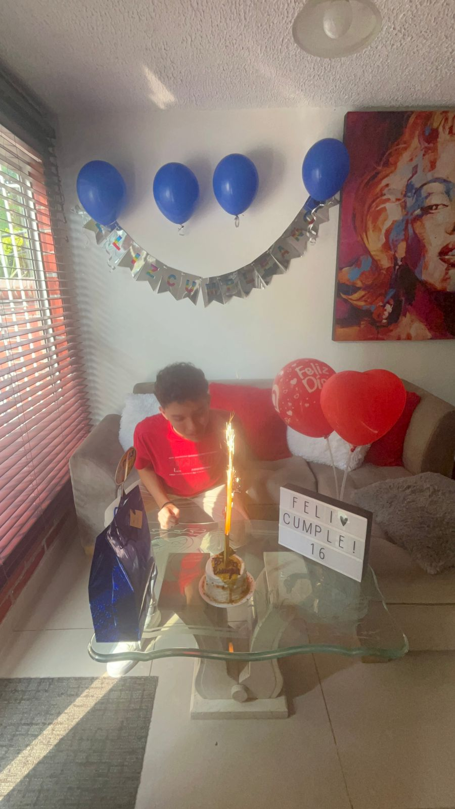
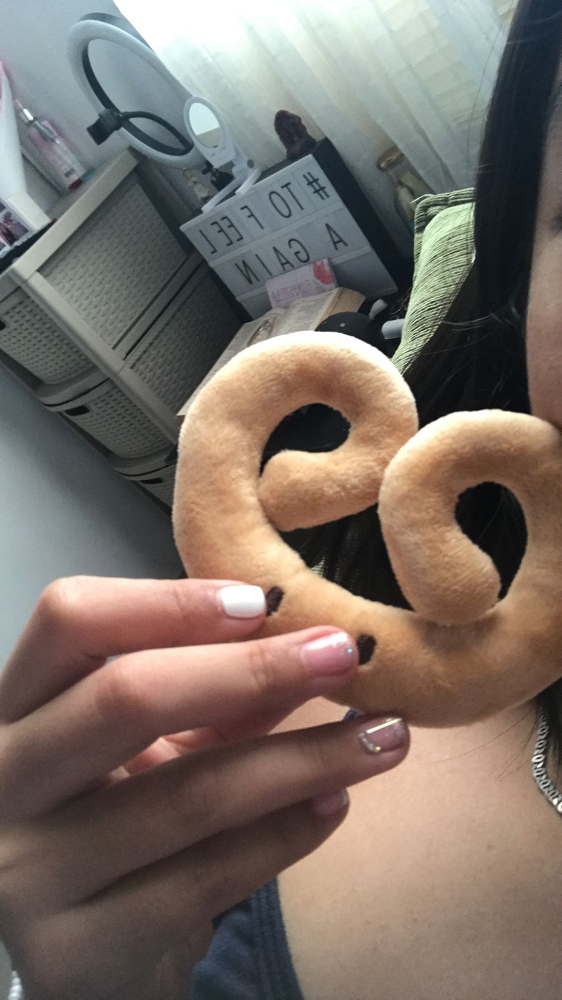
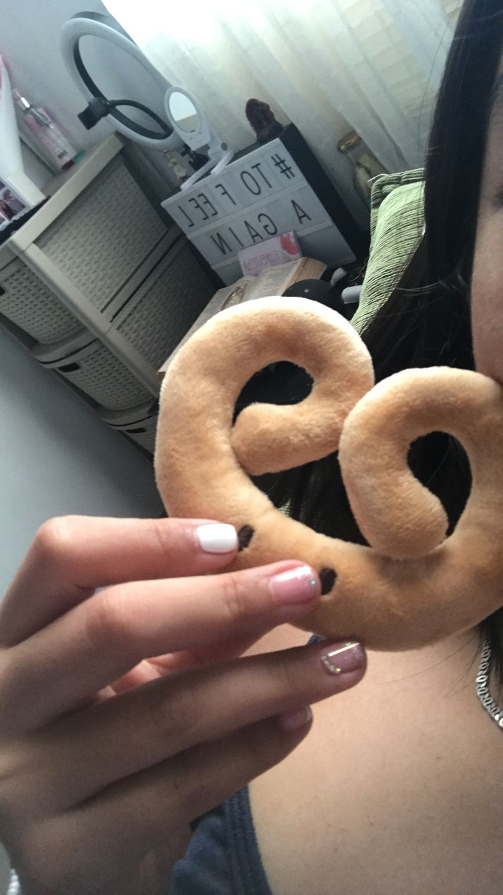

ESPECIAL
Aqui se describiran algunos de los momentos mas especiales para mi :)
14 de febrero, dia de san valentin (aunque en Colombia no se celebre) quise hacer de ese dia, algo especial y unico para ti, llevaba pensando ese detalle como con 1 mes de anticipacion, tenian que ser flores, sabia que las amaba y ya te habia dado unas primeras y para ti eso fue hermoso; ese dia no nos podiamos ver porque tu madre andaba de viaje, pero yo siempre resuelvo bb y me fui con mi hermana en moto exclusivamente par darte ese detalle, llegue a tu casa, te entregue eso mas las otras cositas y me senti satisfecho, amo darte detalles, yo expreso mi amor por medio de contacto fisico, palabras y regalitos.
 

Era 8 de marzo, recuerdo que ese dia me iba a ver contigo acabamos escuela, me di un baño y sali para la barberia; allí, me demore un rato y cuando acabe, tome un uber y me fui directo para tu casa, cuando llegue, no sabia lo que me esperaba; me abriste la puerta y ver eso me dejo en shock, nunca habia pensado que me hicieran eso, me senti especial, estaba muy feliz y no sabia ni que decir de los nervios. Recuerdo que tu madre bajo, y ambas me cantaron el cumpleaños... La mejor parte fue cuando le dimos la bienvenida al nuevo integrante de la familia (pou), toda la vida habia querido uno de esos y tu me cumpliste eso.
Enero 28, era el ultimo dia de vacaciones antes de volver al colegio; fue un dia muy especial y raro para mi porque todo fue muy improvisado, recuerdo que primero, me digiste con una hora de anticipacion para ir con tu mami y contigo a caminar y estar en el rio, yo claramente acepte y fui, alli la pasamos super bien, pasamos el rato juntos, metimos los piesitos al agua, disfrutabamos el dia, y algo chistoso que nunca se me va a olvidar fue cuando te dio un colapso mental y mojaste el zapato tuyo JAJAJA; Despues de eso, tu mami me invito a almorzar a tu casa, asi que seguimos derecho para alla y desde ese punto, para mi ya era un dia super wtf, despues de almorzar, hicimos arrunchis en la camita mientras veiamos una peli, luego de unas 2 horitas ya era hora de irme para casa, perooo yo me las ingenie y quise invitar a tu mama a cholao, entonces, llegamos a nuestra ultima parada, VILLA VERDE, alli tu y yo compartimos todooo el rato, compramos unos digamos coctelsitos mientras tu mama estaba con un amigo y alli nos quedamos hasta las 8:30 de la noche...
Ahora si, unos de los dias que mas anhelaba que llegará, el reencuentro despues de ese mes que te fuiste del pais. Fue un 10 de Enero, yo estaba muy nervioso, queria darte esa bienvenida con un detalle, y que mas detalle que ser el primer hombre en darte flores, para mi tambien fue muy importante, porque tambien era mi primer vez dandole flores a alguien. Yo te extrañaba demasiado, no podia parar de pensar en ti, juré llegar y ponerme a llorar mientras te abrazaba, fue lo mas bonito de mi vida. Ese dia lo disfrute como nunca, ya volviamos a la cotidianidad juntos y yo seguia enamoradisimo de ti, espere cada dia posible, me despertaba a las 3am para hablar contigo, todo fue un sacrificio, pero que valia completamente la pena por hablar contigo. Te amo Mucho<3
 

Cuando vi crecer a mi bebe, el dia de tu cumpleaños, un 26 de enero, ese dia realmente no tenia algo tan preparado, puesto que ya tenia como prioridad darte las flores el 14 de febrero y sabia que ese iba a ser un gasto grande, pero no me importo, quise comprarte un peluchito/almohada de miniso que pensé que te podia haber gustado, llegue, te veias hermosisima, y yo por supuesto, me vestí como tu tanto anhelabas. Yo ese dia la pasé genial, no solo vi a la mujer de mi vida feliz, sino que me sentia super orgulloso de ti y de todo lo que habiamos logrado, yo se que estar contigo fue de las mejores cosas que me han pasado en la vida, tu eres mi niña pequeña, siempre cuidare y amaré de ti.

Cuando toda esta historia de amor comenzó, el 21 de julio de 2023, primer vez que nos veiamos personalmente; me habias invitado a tu casa para conocernos un poco mas, yo estaba demasiado nervioso porque ya te iba viendo de otra manera, yo no sabia que hacer, recuerdoo cuando me sente en tu cama y nos quedamos callados los dos sin decir ninguna palabra JAJAJA, cuando jugamos en la cancha con un balon de tu abuela; este dia siempre tendrá un espacio en mi corazón, probablemente, el mas importante de todos.